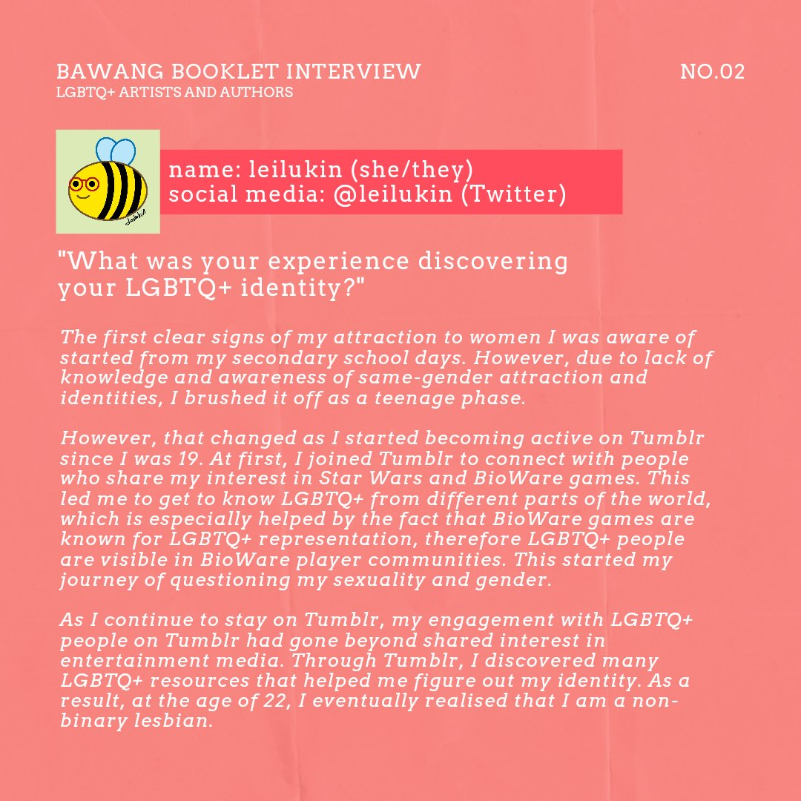
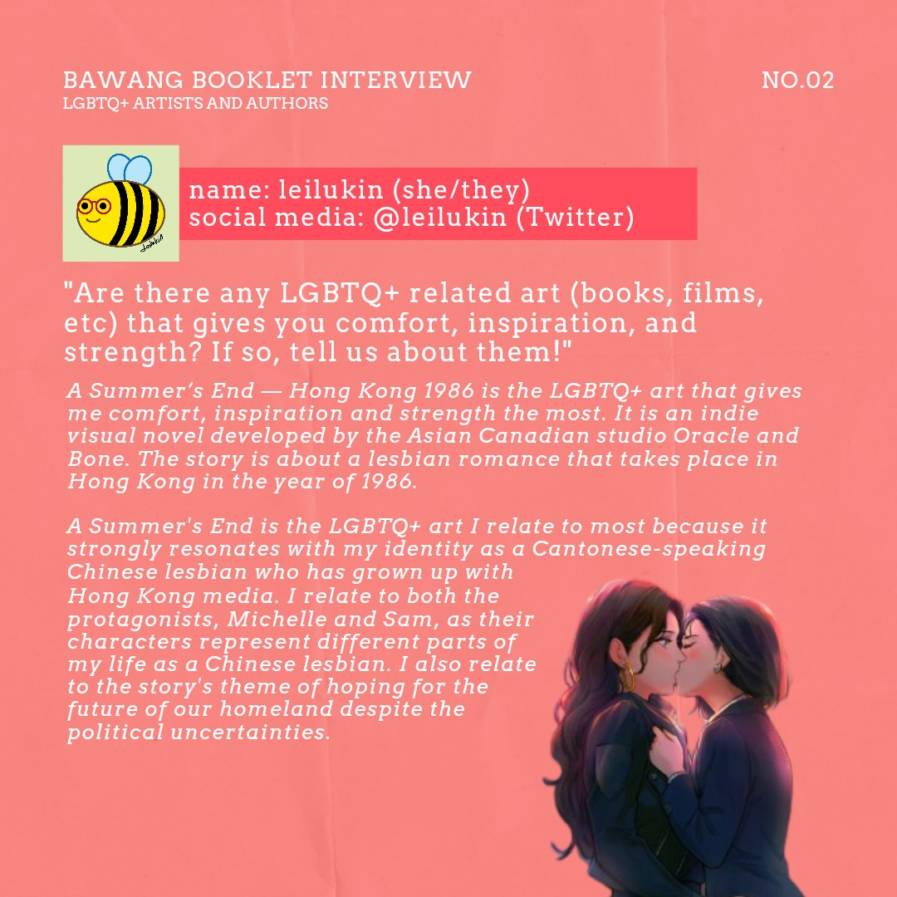
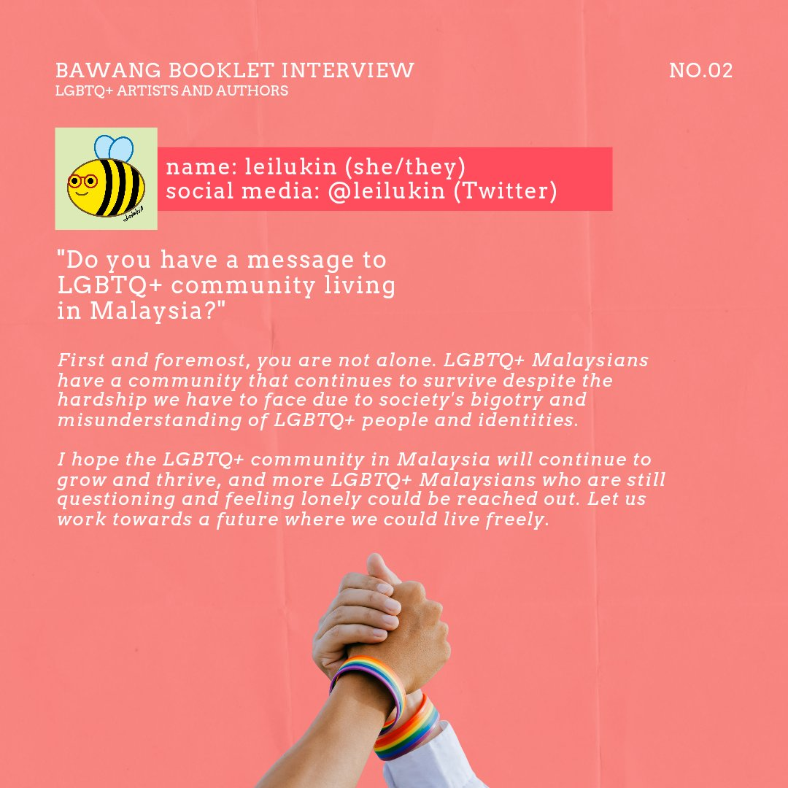

Floating in a Sky Full of Pride: LGBTQ+ Booklet Artist Interview from MISI:Bawang
(This article is also available on my art blog on Tumblr)
Floating in a Sky Full of Pride, the LGBTQ+ booklet of MISI:Bawang, a Malaysian digital booklet project, has been released on Valentine’s Day 2022. Since my submitted art piece, Life of a Bee with Pride, has been selected to be included in the booklet, I had received the honour of being interviewed by MISI:Bawang to share my personal experience with my LGBTQ+ identity, favourite queer art/media, and a ✨ special message to the Malaysian LGBTQ+ community. 🏳🌈


MISI:Bawang has shared their interview with me and other Malaysian LGBTQ+ artists and authors who submitted their work to the booklet on Twitter and Instagram. Here are the Twitter thread and Instagram post that include my interview.
Text version of my interview below:
“What was your experience discovering your LGBTQ+ identity?”
The first clear signs of my attraction to women I was aware of started from my secondary school days. However, due to lack of knowledge and awareness of same-gender attraction and identities, I brushed it off as a teenage phase.
However, that changed as I started becoming active on Tumblr since I was 19. At first, I joined Tumblr to connect with people who share my interest in Star Wars and BioWare games. This led me to get to know LGBTQ+ from different parts of the world, which is especially helped by the fact that BioWare games are known for LGBTQ+ representation, therefore LGBTQ+ people are visible in BioWare player communities. This started my journey of questioning my sexuality and gender.
As I continue to stay on Tumblr, my engagement with LGBTQ+ people on Tumblr had gone beyond shared interest in entertainment media. Through Tumblr, I discovered many LGBTQ+ resources that helped me figure out my identity. As a result, at the age of 22, I eventually realised that I am a non-binary lesbian.
“Are there any LGBTQ+ related art (books, films, etc) that gives you comfort, inspiration, and strength? If so, tell us about them!”
A Summer’s End - Hong Kong 1986 is the LGBTQ+ art that gives me comfort, inspiration and strength the most. It is an indie visual novel developed by the Asian Canadian studio Oracle and Bone. The story is about a lesbian romance that takes place in Hong Kong in the year of 1986.
A Summer’s End is the LGBTQ+ art I relate to most because it strongly resonates with my identity as a Cantonese-speaking Chinese lesbian who has grown up with Hong Kong media. I relate to both the protagonists, Michelle and Sam, as their characters represent different parts of my life as a Chinese lesbian. I also relate to the story’s theme of hoping for the future of our homeland despite the political uncertainties.
“Do you have a message to LGBTQ+ community living in Malaysia?”
First and foremost, you are not alone. LGBTQ+ Malaysians have a community that continues to survive despite the hardship we have to face due to society’s bigotry and misunderstanding of LGBTQ+ people and identities.
I hope the LGBTQ+ community in Malaysia will continue to grow and thrive, and more LGBTQ+ Malaysians who are still questioning and feeling lonely could be reached out. Let us work towards a future where we could live freely.